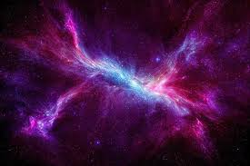

History of Space Exploration
Ancient and Early Observations
Early astronomers, such as the Babylonians, Greeks, and Chinese, made significant contributions to our understanding of celestial bodies. They developed calendars based on lunar cycles and created models of the universe.
The Space Age Begins
In 1957, the Soviet Union launched Sputnik 1, the first artificial satellite, marking the beginning of the space age and the start of the space race.
Human Spaceflight
In 1961, Soviet cosmonaut Yuri Gagarin became the first human to travel into space and orbit the Earth aboard Vostok 1.
Robotic Exploration
NASA's Viking 1 and Viking 2 missions successfully landed on Mars in 1976, conducting experiments and sending back images of the Martian surface.
The International Space Station and Beyond
Construction of the International Space Station (ISS) began in 1998, serving as a collaborative platform for scientific research and international cooperation in space.
Recent Developments
NASA's Perseverance rover landed on Mars in 2021, tasked with searching for signs of ancient life and collecting samples for future return to Earth.
Future of Space Exploration
As we look to the future, space exploration continues to evolve with advancements in technology and international collaboration.